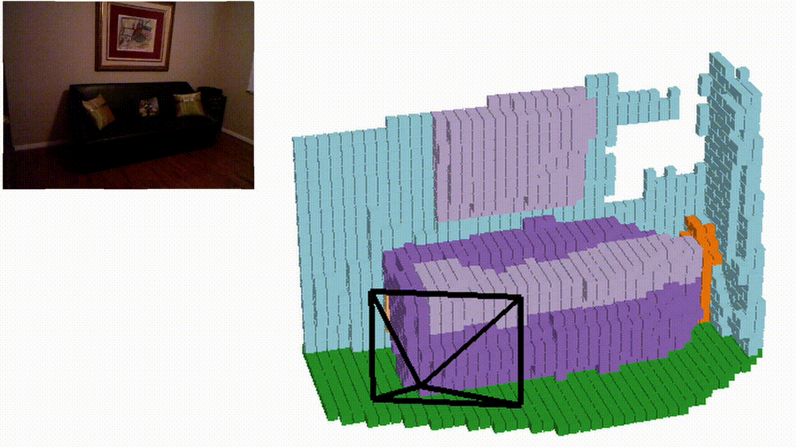
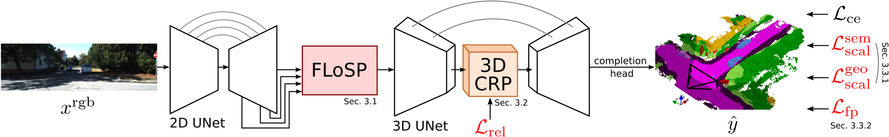
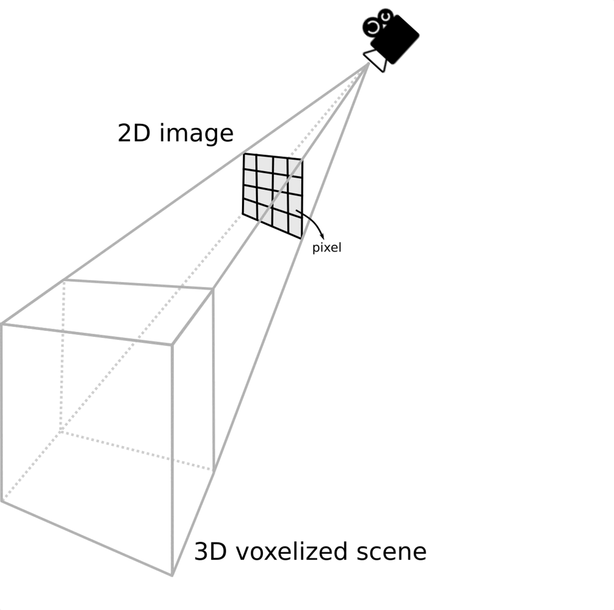
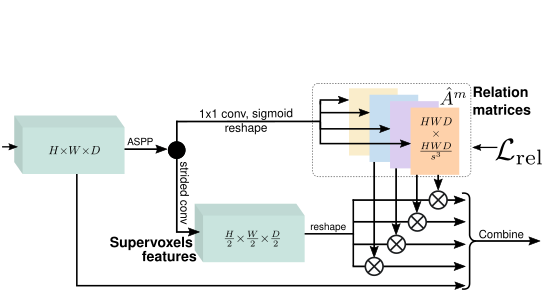
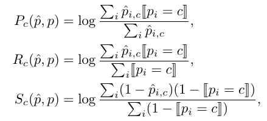
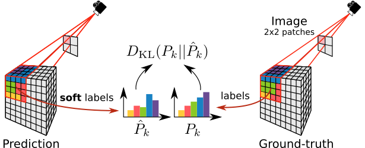
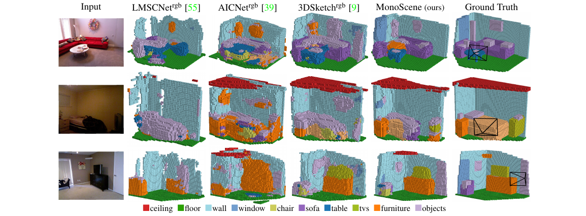
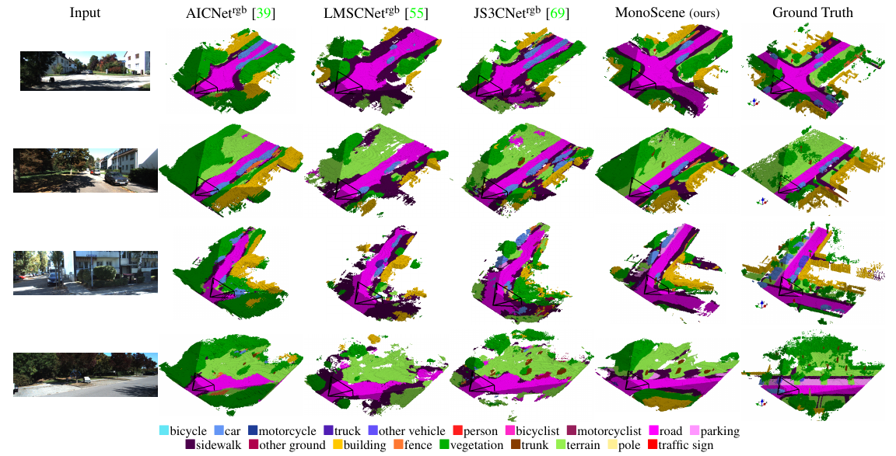

MonoScene: Monocular 3D Semantic Scene Completion
CVPR 2022
NYUv2 
Semantic KITTI

KITTI-360 (Trained on Semantic KITTI)


Abstract
MonoScene proposes a 3D Semantic Scene Completion (SSC) framework, where the dense geometry and semantics of a scene are inferred from a single monocular RGB image.
Different from the SSC literature, relying on 2.5 or 3D input, we solve the complex problem of 2D to 3D scene reconstruction while jointly inferring its semantics.
Our framework relies on successive 2D and 3D UNets bridged by a novel 2D-3D features projection inspiring from optics and introduces a 3D context relation prior to enforce spatio-semantic consistency. Along with architectural contributions, we introduce novel global scene and local frustums losses.
Experiments show we outperform the literature on all metrics and datasets while hallucinating plausible scenery even beyond the camera field of view.
Demo video
Method

MonoScene framework
We infer 3D SSC from a single RGB image, leveraging 2D and 3D UNets, bridged by our Features Line
of Sight Projection (FLoSP), and a 3D Context Relation Prior (3D CRP) to enhance spatio-semantic awareness. On top of standard cross-entropy, our Scene-Class Affinity loss
improves the global semantics and geometry and our Frustums Proportion loss enforces class distribution in local frustums, providing supervision beyond occlusions.

Features Line of Sight Projection (FLoSP)
We project multi-scale 2D
feature 2D along their line of sight by sampling them where the 3D voxels centroids project.
This boosts the 2D-3D information flow, and
let the 3D network discovers which 2D features are relevant.

3D Context Relation Prior (3D CRP)
We infer relation matrices (here, 4),
where each encodes a unique voxels relation optionally supervised by a relation loss.
The matrices are multiplied with the supervoxels features to gather
context, and later combined with input
features. The feature dimension is omitted for clarity.

Scene-Class Affinity Loss
We optimize the class-wise derivable
(P)recision, (R)ecall and (S)pecificity where P and R
measure the performance of similar class c voxels, and S
measures the performance of dissimilar voxels (i.e. not of
class c).

Frustums Proportion Loss
Considering an image divided into
same-size 2D patches (here, 2×2), each corresponds to
a 3D frustum in the scene, we align the predicted frustum class
probabilities with the corresponding ground truth.
This provides cues to the network for occlusions disambiguation.
Qualitative results

NYUv2 (test set)
Semantic KITTI (validation set)
Bibtex
If you find this project useful for your research, please cite
@inproceedings{cao2022monoscene,
title={MonoScene: Monocular 3D Semantic Scene Completion},
author={Anh-Quan Cao and Raoul de Charette},
booktitle={CVPR},
year={2022}
}
Followup Works
We extend MonoScene to self-supervised setting but geometry-only estimation in the followup work:
SceneRF: Self-Supervised Monocular 3D Scene Reconstruction with Radiance Fields
SceneRF: Self-Supervised Monocular 3D Scene Reconstruction with Radiance Fields
Novel depths synthesis from a single image

3D reconstruction from a single image

Acknowledgements
This work was performed using HPC resources from GENCI–IDRIS (Grant 2021-AD011012808) and was partially funded by PSPC SAMBA 2022.
Copyright Notice
The documents contained in these directories are included by the contributing authors as a means to ensure timely dissemination of scholarly and technical work on a non-commercial basis. Copyright and all rights therein are maintained by the authors or by other copyright holders, notwithstanding that they have offered their works here electronically. It is understood that all persons copying this information will adhere to the terms and constraints invoked by each author's copyright.